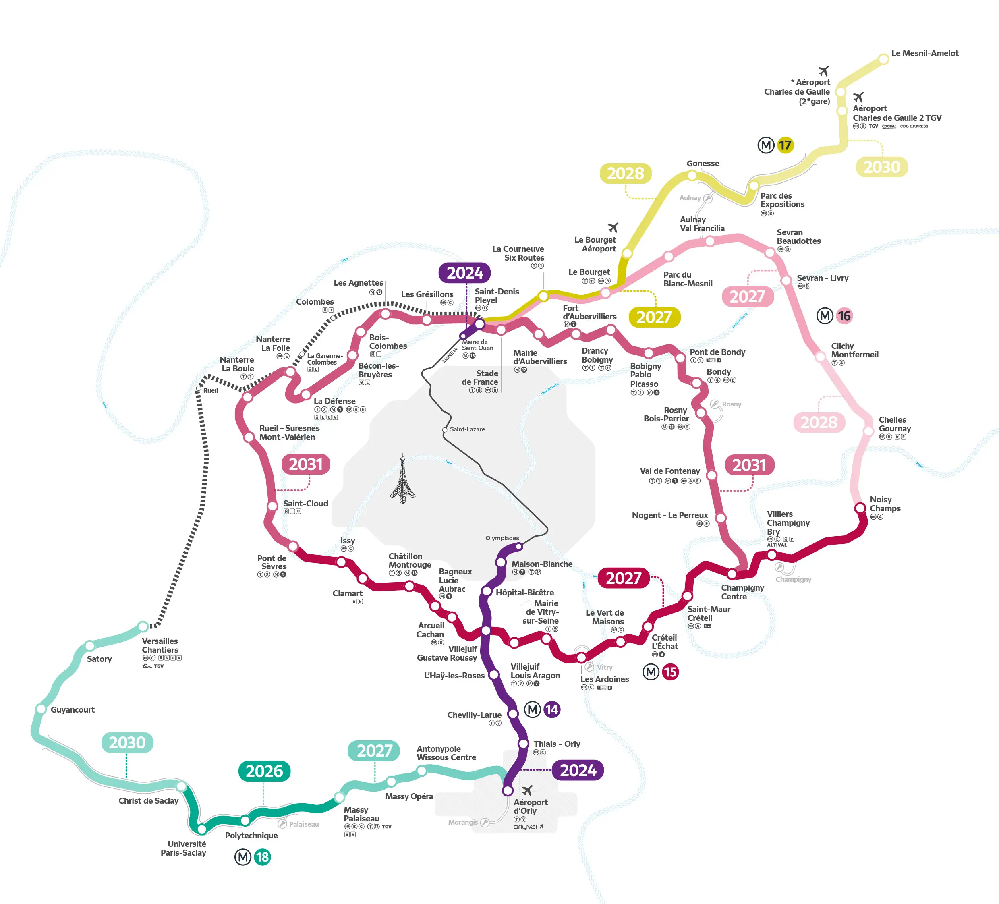

Le Grand Paris Express
Bonjour à tous, aujourd'hui nous allons vous présenter le projet du Grand Paris Express.
Qui a réalisé ce site ?
Maxime NIKNAM ASL, élève de 1ère 6 au lycée Louis-le-Grand.
Maxime NIKNAM ASL, élève de 1ère 6 au lycée Louis-le-Grand.